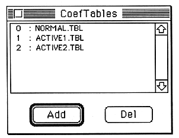

Use the “ADD” button to register additional coefficient table files.
Use the “DEL” button to deregister the selected coefficient table file. When the registration is canceled, the subsequent coefficient table file numbers are filled. For this reason, please note that the specification of the coefficient table number of the module may need to be changed.
Reference A coefficient table file is a data file containing binary data of A00H size. . extension is “.TBL”. The dynamic filter module requires this, but this Change the filter characteristics such as resonance by changing the coefficient table file of You can .
AlterToGlobal
The global factor usage screen opens. This item can be selected only when a coefficient that can be globalized in the parameter edit window is selected. As a general rule, parameters whose units are displayed in [%] can be globalized.
RevertToLocal
The globally specified coefficient selected in the parameter edit window is returned locally. This item can be selected only when the parameter edit window is active.